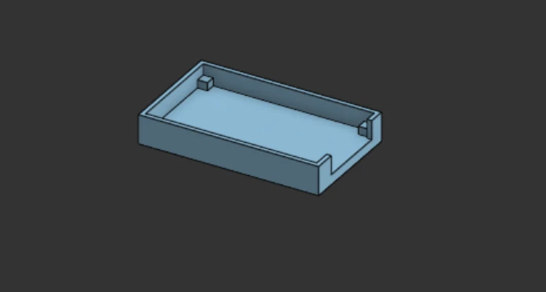

Spotify Now Playing Display
A small touchscreen that shows the song playing on Spotify and lets me skip, pause and browse playlists.
This project follows a tutorial
I did not design the software or come up with this project. I built it by following the original author's guide, step by step. I include it here because it was real hands-on practice with ESP32 hardware, and I would rather be clear about where it came from.
I could not track down the original author, so I can't credit them by name. The idea and the software are theirs.
What it does
- Shows the current song with album art on a 2.8 inch color touchscreen
- Changes the background color to match the album art
- Touch controls for play, pause and skip
- Playlist browser on the screen

Hardware and setup
| Board | ESP32-2432S028R, the "Cheap Yellow Display" (CYD), with built-in screen and touch |
| Software | Arduino IDE, TFT_eSPI display library |
| Spotify | A Spotify developer app and a refresh token for access to my account |
| WiFi | WiFiManager, so the display can join a network without editing code |
| Touch | Touch calibration run on the screen |
| Case | Designed in Onshape and 3D printed |
What I did myself
I designed and printed the case that holds the board. I also set up the Arduino IDE for the board, configured the display library for this screen, registered the Spotify developer app and completed the refresh token steps, connected the display to WiFi, and calibrated the touch panel. The code and the idea belong to the tutorial author.
The case
The case is an open tray with small corner blocks that hold the board and a cutout at one end. I modeled it in Onshape and printed it. It was a small design, and it was a good way to practice getting a part to fit real hardware.

What it taught me
Display setup
Small screens need their pin and driver settings to match the exact board. A wrong setting gives a blank or garbled screen.
Web access with tokens
Spotify does not hand out a permanent password. The board uses a refresh token to ask for short-term access.
Following a guide closely
Matching versions of boards, libraries and settings to the guide mattered more than I expected.